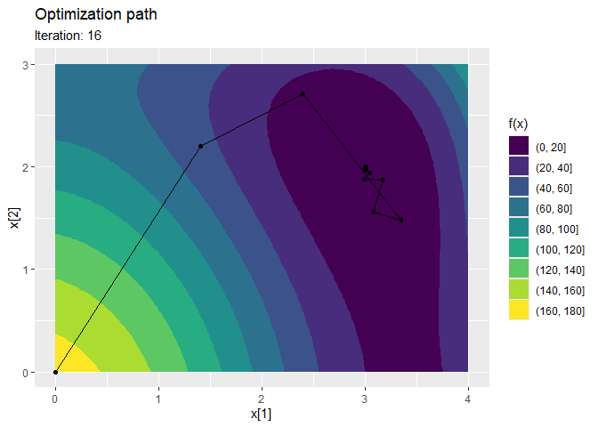
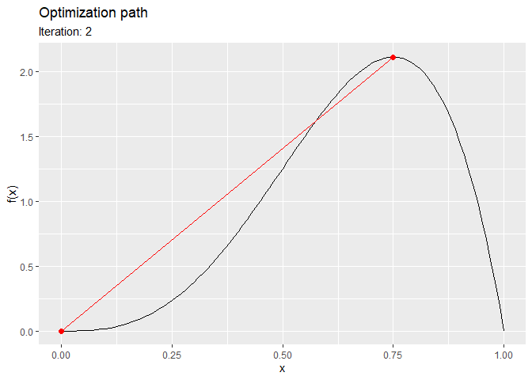

The trackopt package tracks parameter values, gradients, and Hessians at each iteration of numerical optimizers in R. This can be useful for analyzing optimization progress, diagnosing issues, and studying convergence behavior.
Installation
You can install the released package version from CRAN with:
install.packages("trackopt")Example
The following is the nlm minimization track of the Himmelblau’s function:
library("trackopt")
himmelblau <- function(x) (x[1]^2 + x[2] - 11)^2 + (x[1] + x[2]^2 - 7)^2
track <- nlm_track(f = himmelblau, p = c(0, 0))
print(track)
#> # A tibble: 17 × 7
#> iteration value step parameter gradient hessian seconds
#> * <dbl> <dbl> <dbl> <list> <list> <list> <dbl>
#> 1 0 170 0 <dbl [2]> <dbl [1]> <dbl [1]> 0
#> 2 1 47.4 -1.23e+2 <dbl [2]> <dbl [2]> <dbl [2 × 2]> 0.0275
#> 3 2 14.0 -3.34e+1 <dbl [2]> <dbl [2]> <dbl [2 × 2]> 0.00121
#> 4 3 4.91 -9.08e+0 <dbl [2]> <dbl [2]> <dbl [2 × 2]> 0.00119
#> 5 4 2.26 -2.65e+0 <dbl [2]> <dbl [2]> <dbl [2 × 2]> 0.00117
#> 6 5 0.951 -1.31e+0 <dbl [2]> <dbl [2]> <dbl [2 × 2]> 0.00111
#> 7 6 0.272 -6.79e-1 <dbl [2]> <dbl [2]> <dbl [2 × 2]> 0.00104
#> 8 7 0.0650 -2.07e-1 <dbl [2]> <dbl [2]> <dbl [2 × 2]> 0.00109
#> 9 8 0.0168 -4.82e-2 <dbl [2]> <dbl [2]> <dbl [2 × 2]> 0.00104
#> 10 9 0.00400 -1.28e-2 <dbl [2]> <dbl [2]> <dbl [2 × 2]> 0.00102
#> 11 10 0.000948 -3.06e-3 <dbl [2]> <dbl [2]> <dbl [2 × 2]> 0.00101
#> 12 11 0.000221 -7.28e-4 <dbl [2]> <dbl [2]> <dbl [2 × 2]> 0.00101
#> 13 12 0.0000512 -1.69e-4 <dbl [2]> <dbl [2]> <dbl [2 × 2]> 0.00102
#> 14 13 0.0000118 -3.94e-5 <dbl [2]> <dbl [2]> <dbl [2 × 2]> 0.00102
#> 15 14 0.00000275 -9.05e-6 <dbl [2]> <dbl [2]> <dbl [2 × 2]> 0.00100
#> 16 15 0.000000628 -2.13e-6 <dbl [2]> <dbl [2]> <dbl [2 × 2]> 0.00107
#> 17 16 0.000000152 -4.76e-7 <dbl [2]> <dbl [2]> <dbl [2 × 2]> 0.00377
summary(track)
#> Iterations: 16
#> Function improvement: 170 -> 1.521e-07
#> Computation time: 0.04624 seconds
#> Initial parameter: 0, 0
#> Final parameter: 3, 2
ggplot2::autoplot(track)
The following is the optim maximization track of the Beta-PDF:
optim_track(
f = dbeta, p = 0, lower = 0, upper = 1, shape1 = 4, shape2 = 2, method = "Brent", minimize = FALSE
) |> ggplot2::autoplot()
Contact
If you have any questions, found a bug, need a feature, just file an issue on GitHub.